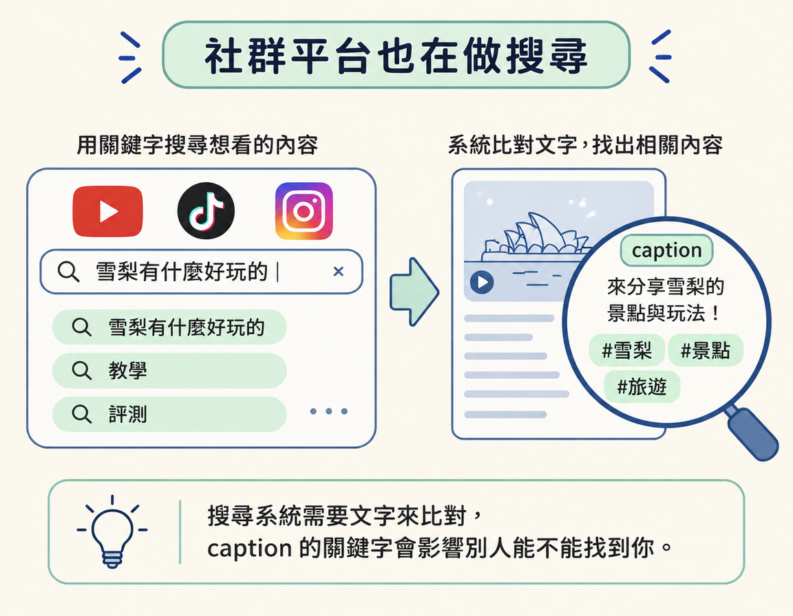
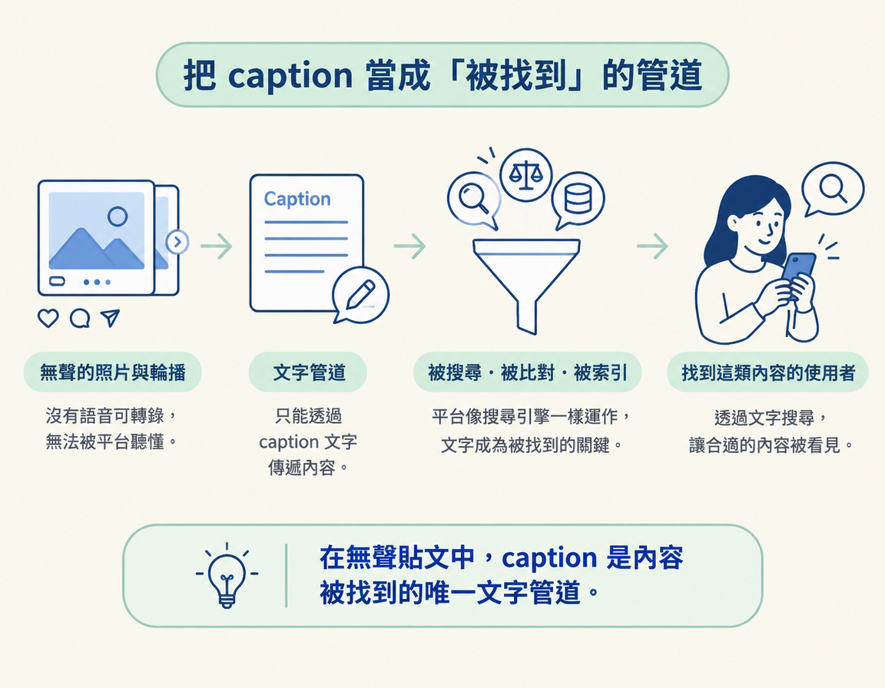

你會用「平台即搜尋引擎」的角度理解 caption：它是一段能被搜尋、被索引的文字，能幫助正在找相關內容的人找到你，而不只是貼文上的裝飾。
上一節我們得到一個有點矛盾的結論：caption 已經不是帶來觀看與觸及的主力，但每則貼文都還是會附上它。既然它不負責帶流量，花心思寫它究竟有什麼用？
這一節會接著上一節的結論，看看社群平台如何逐漸成為搜尋工具。從「caption 不再是流量主力」這個觀察出發，你會得到一個新的理解：caption 可以幫助內容被搜尋、被找到。
搜尋搬進社群平台之後，caption 的角色也跟著改變。它不再是貼文下方的裝飾，而像一張能被搜尋、被索引的卡片。
先看一個常被引用的數字：YouTube 是世界第二大搜尋引擎，僅次於 Google。人們真的會把 YouTube 當成搜尋工具：想看某個教學或評測，就直接在 YouTube 輸入關鍵字找影片，不一定會先到 Google 搜尋。
類似的習慣也出現在其他平台。很多人會直接打開 TikTok 或 Instagram，搜尋「雪梨有什麼好玩的」、「洛杉磯有什麼好玩的」這類在地生活問題，藉此找到店家、景點，或想體驗的活動。過去常見的「上網搜尋」，現在有一部分已經發生在社群平台裡。
把平台看成搜尋引擎，就能理解它為什麼在意文字內容：搜尋系統需要文字來比對。caption 有沒有提到相關關鍵字、能不能清楚說明內容主題，都會影響正在搜尋的人能不能找到你。

Google 會索引 YouTube，也會索引 Instagram 上的 caption。也就是說，你寫的 caption 不只留在平台內，也有機會被搜尋引擎收錄，成為別人搜尋時可能看到的結果。
換句話說，caption 不只是寫給當下滑到貼文的人看，也會被機器讀取、比對和歸類。文字裡具體的名詞，就像替內容貼上標籤，讓系統更容易判斷它在談什麼。
接下來還有 AI 這一層。當越來越多人使用 AI agent，也就是能替使用者查找資訊、完成任務的 AI 助理，你可以提早為這種搜尋方式做準備，而善用 caption 就是其中一種方法。
可以把 caption 想成書背上的書名，把平台搜尋想成圖書館的索引卡。讀者會照著索引卡上的資訊找書，不必先把每本書翻開來讀。caption 越清楚說明內容是什麼，就越有機會讓需要這類內容的人找到它。
把前面幾件事接起來，caption 的定位就清楚了：它不是用來保證貼文被推給更多人，而是幫助正在找這類內容的人找到你。平台要不要推薦你，不完全由你決定；文字是否清楚，則是你能掌握的部分。
這也說明了為什麼沒有聲音的照片和輪播貼文，同樣需要認真寫 caption。它們不能靠平台聽懂你說的話，只能透過文字被搜尋和比對。當平台像搜尋引擎一樣運作，文字就是內容被找到的一條路。

不過，讓搜尋引擎找到你還不是最新的變化。Google 首頁近年出現了更大的改變，也帶出這一段接下來要談的主題：AEO，意思是讓內容更容易被答案引擎找到並用來回答問題。下一節會從「答案引擎」的角度，說明為什麼值得為它而寫 caption。
社群平台正變得越來越像搜尋引擎：YouTube 是世界第二大搜尋引擎，僅次於 Google；人們也會直接在 TikTok 或 Instagram 搜尋在地生活問題。Google 會索引 YouTube 和 Instagram 的 caption，因此 caption 是能被搜尋、被索引的文字。它的角色從貼文裝飾，變成幫助人找到你的管道。你很難控制平台會不會推薦你，卻能把文字寫清楚，讓內容更容易被搜尋到。
Instagram 官方說明搜尋如何運作（Breaking Down How Instagram Search Works）：about.instagram.com，其中說明 Instagram 搜尋會比對哪些資訊，包括 caption。
YouTube 的自動字幕說明：support.google.com。YouTube 會把你說的話轉成文字。